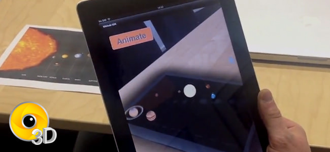
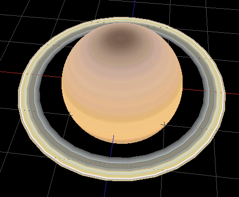

Solar System (IR)
In this demo we combined image recognition capabilities with 3D models to visualize our solar system in a unique way. The example allows viewers to look at several planets of the solar system and receive basic information for each planet.

The augmentation consists of a backdrop that is used to darken the overlaid image and the planets of our solar system (still including Pluto). Each planet is loaded as a separate 3D model to allow it to be animated independently from each other.

Looking at the code of the example there are a few components worth noting. The detail information for each planet is stored in the planetsInfo array which is then used to create the AR.Model object for each planet. Depending on the size and distance from the sun each planet is placed on the target using the translate and scale properties.
The backdrop is a simple AR.ImageDrawable that is added together with the planets to the AR.Trackable2DObject drawables.
Animating the planets on a circle around the sun is accomplished by the utilizing multiple AR.PropertyAnimations which are combined in AR.AnimationGroups. The function createOrbitAnimation(planet, info) creates the necessary animations for this action. The circle is divided in 4 quadrants which require different animations for the x and y axis. Animations for the x and y axis are combined in a parallel animation and are played sequentially in order to achieve the desired circular movement.
Initially the planets are static and don't move. Once the user clicks the animate button the toggleAnimatePlanets() function is called. It checks the current state of the animations and starts, pauses, or resumes the animations accordingly.
Another part of the demo is the selection of planets and the displaying of a selected planet's information. Each planets AR.Model has an onClick trigger set which calls the planetClicked() function. This call displays a selected planet's information on the HUD. Helper functions selectPlanet() and screenClicked() activate and deactivate the selected animations and reset a previously selected planets scale property.